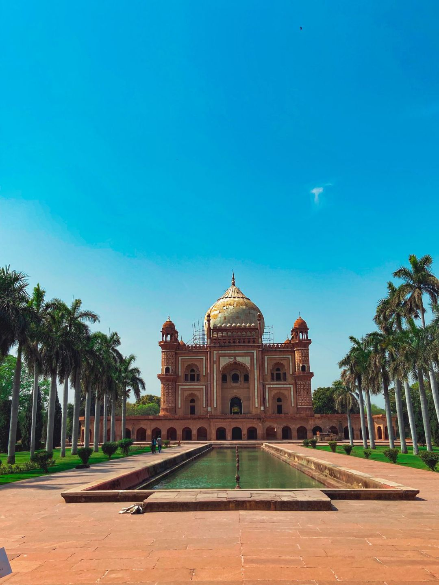
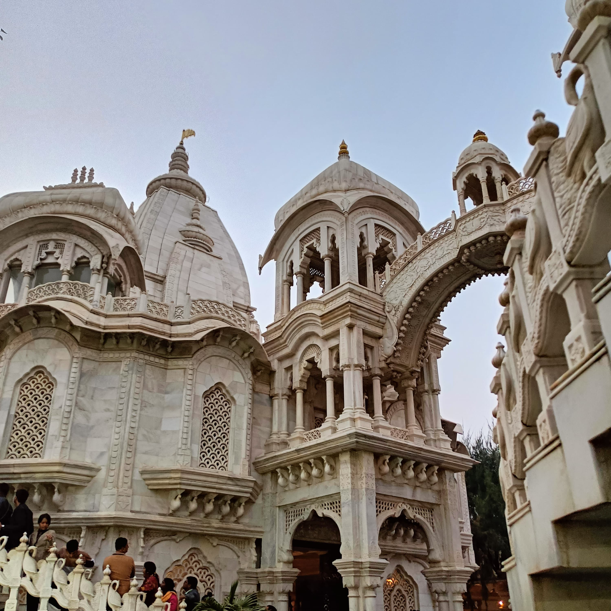
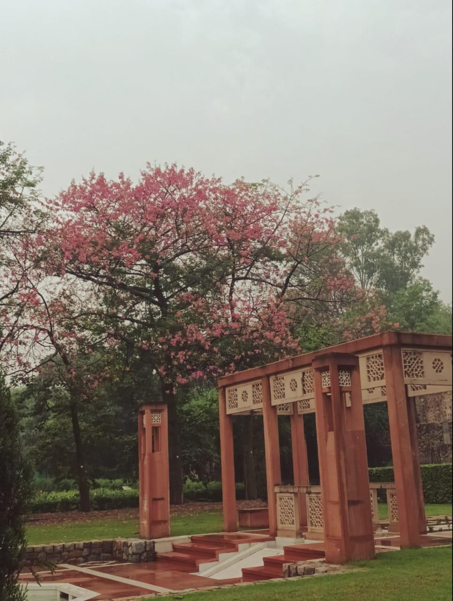
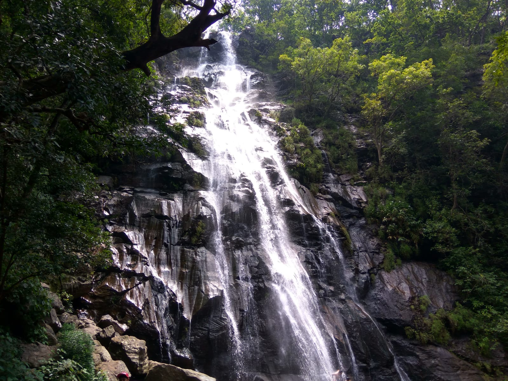
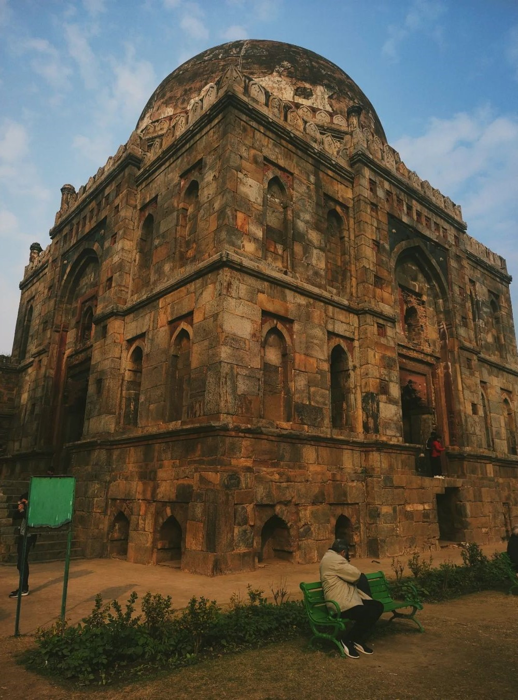

- 
Safdarjung Tomb
Safdarjung's tomb is a sandstone and marble mausoleum in Delhi, India. It was built in 1754 in the late Mughal Empire style for Nawab Safdarjung.
- 
Iskcon Temple
ISKCON Vrindavan, also called Sri Sri Krishna Balaram Mandir,It is a Gaudiya Vaishnava temple located in the city of Vrindavan, Mathura district.
- 
Sunder Nursery
Sunder Nursery, formerly called Azim Bagh or Bagh-e-Azeem, is a 16th-century heritage park complex, a UNESCO World Heritage Site in Delhi. It lies on the Mughal-era Grand Trunk Road, and is spread over 90 acres (36 hectare).

Hauz khas fort
Hauz Khas Fort near Hauz Khas Village was constructed during the reign of Allaudin Khilji, and the place has the remains of its glorious past.
- 
Bee Falls
Bee Fall is a popular water-fall located at Pachmarhi Hill Station in Madhya Pradesh state on Central India.
- 
Lodhi Garden
Lodi Gardens is a city park situated in New Delhi, India. Spread over 90 acres (360,000 m2), it contains Mohammed Shah's Tomb, the Tomb of Sikandar Lodi, the Shisha Gumbad and the Bara Gumbad.